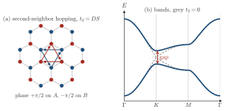
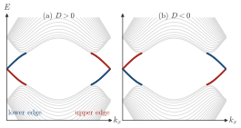

Advanced Quantum Materials 2027 · All lectures · Lecture notes
Session 6. Classical Magnetism and Magnons
6.16 Topological magnons
Once magnons have a real band structure, which is a dispersion \(E(\mathbf k)\) over the Brillouin zone, we can ask about magnon bands the same question that we have already asked twice about electronic bands. Can this band structure have a nontrivial topological invariant? To answer it, we use again the Chern number (3.4) of Session 3 and Session 4, where the Berry curvature \(\Omega(\mathbf k)\) of a Bloch band is integrated over the Brillouin zone and gives an integer,
\[C = \frac{1}{2\pi}\int_\text{BZ} \Omega(\mathbf k)\, d^2k, \tag{6.10}\]
and this is the third time that we apply it, now to the bosonic Bogoliubov Hamiltonian of Section 6.15 instead of an electronic tight-binding Hamiltonian. We add to the plain Heisenberg exchange a spin-orbit coupling of the Dzyaloshinskii-Moriya type of Section 6.12. This term plays the same role as the complex second-neighbor hopping of the Haldane model for electrons in Section 3.10b. It introduces complex phases in the magnon hopping amplitudes. These phases can open a gap in the magnon band structure at finite energy, and give the bands on both sides of this gap a nonzero Chern number (6.10). When we put such a topological magnon Hamiltonian on a ribbon, the bulk-boundary correspondence of Section 3.7 guarantees chiral magnon edge modes inside the gap. These modes propagate in only one direction along each edge, and they are the magnon analogue of the chiral electronic edge states of a Chern insulator. They carry spin and energy and not charge, but they are topologically protected in the same sense as their electronic counterparts. It is the same tool that we used for electrons in Session 3 and Session 4, now applied to magnon bands.
Schematic Schematic 6.11 shows this on a honeycomb ferromagnet, with \(J<0\). The magnon hops between first neighbors with \(t=|J|S\), and the Dzyaloshinskii-Moriya term gives a second-neighbor hopping with phase \(\pm\pi/2\), with opposite signs on the two sublattices. This is the Haldane model of Section 3.10b, up to a constant, with \(t_2=DS\), so the gap at \(K\) is \(6\sqrt3\,t_2\).


A magnon band gap has bands with Chern numbers \(\pm1\). What do we find on the edges of a ribbon?
Show the answers
- A. ✗ False
This is false. The bulk-boundary correspondence counts Chern numbers and does not use charge. In the Haldane model with \(C=\pm1\) the same counting gives one chiral branch, and for magnons it carries spin and heat.
- B. ✓ True
This is true. The chiral edge branches carry spin and energy, one per unit of Chern number. On the two edges of a ribbon they run in opposite directions.
- C. ✗ False
This is false. Two branches of opposite direction on one edge give a net chirality of zero. They could backscatter into each other and gap out, so they cannot be required by \(C=\pm1\).
We reverse the sign of the Dzyaloshinskii-Moriya vector. What happens to the topological magnon bands?
Show the answers
- A. ✗ False
This is false. Reversing the vector is a mirror operation, so the spectrum is the same. In the Haldane model the phases \(+\pi/2\) and \(-\pi/2\) give identical gaps, and only \(C\) changes sign.
- B. ✓ True
This is true. This term plays the role of the complex hopping of the Haldane model, and reversing its sign reverses the phases. The Berry curvature changes sign, so the Chern numbers change sign too.

The edge states of a magnon ribbon, zigzag edges and \(24\) cells wide, for \(t=1\) and \(t_2=\pm0.1\). The branch of the lower edge rises for one sign and falls for the other, and the upper edge does the opposite. - C. ✗ False
This is false. In the Haldane model the phase \(\varphi=+\pi/2\) gives \(C=+1\) and \(\varphi=-\pi/2\) gives \(C=-1\). The direction of the edge branch follows this sign, so it does change.
Notebook check-in: session6.ipynb, “(Exercise) Topological magnons in 2D magnets”
Construct a magnon Hamiltonian with a spin-orbit term of Dzyaloshinskii-Moriya type on top of the Heisenberg exchange, compute its Chern number with (6.10), and look for chiral magnon edge modes on a ribbon. This reproduces directly, for magnons, the argument of the bulk-boundary correspondence above.
Try it. In the cell, h.add_haldane(0.1) sets the complex hopping that plays the role of the Dzyaloshinskii-Moriya term. Change it to -0.1 and compute h.get_chern() before building the ribbon. The Chern number changes sign.
The companion notebook goes further than these notes in two places, with exercises on electronic and magnetic symmetry breaking in graphene multilayers and on many-body spin response functions. We do not derive them here, so they are independent work with the notebook, and the spin response functions come back in Session 9.
- In Section 9.8 a vacancy in a Chern insulator hosts a mode inside the gap, which is the bulk-boundary correspondence at a boundary of zero size.
- In Section 10.6 the Chern number is one of the topological invariants that are set against local order parameters, such as the magnetization of this session.
- In Session 7 we leave mean field and single-particle bands, and we treat strongly correlated spin chains with tensor networks.